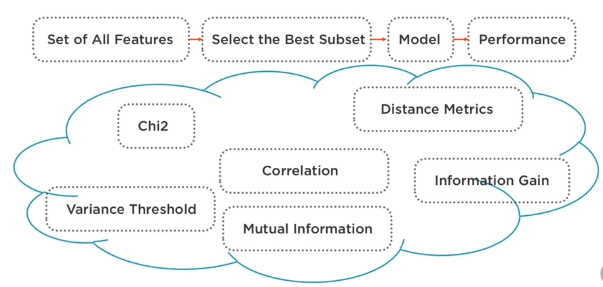
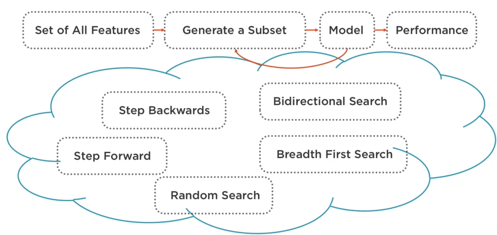

Feature selection (selección de variables)
Contents
Feature selection (selección de variables)¶
More data beats clever algorithms, but better data beats more data
Definición¶
Proceso manual o automático de identificación de las variables que contribuyen o explican en mayor grado los cambios en la variable dependiente (variable de predicción). Incluir variables irrelevantes afecta negativamente el desempeño de los modelos preditivos porque les inducen a detectar “patrones” basados en aspectos irrelevantes (mayor probabilidad de sobreajuste en los modelos).
Además, eliminar variables innecesarias o redundantes implica otras ventajas:
Simplificación de la descripción de cada observación/ejemplo. Modelos complejos se sobreajustan con mayor facilidad.
Tiempo de entrenamiento menor (hay menos datos que procesar)
Enfoques¶
Filtrado a priori (filtering)¶
Estas técnicas buscan eliminar las variables innecesarias antes de emplear los ejemplos/observaciones para entrenar el modelo predictivo.
Estás técnicas son computacionalmente menos costosas que las técnicas wrapper pero no toman en cuenta las caracterísicas del modelo y, por lo tanto, existe la posiblidad de excluir variables que puedan ser útiles. Por lo tanto, se recomienda emplearlas de manera conservadora o evaluar los resultados obtenidos con diferentes conjuntos de variables contra una linea base en la que se emplean todas las variables. Tampoco identifican situaciones de multicolinealidad que pueden tener efectos negativos en modelos de regresión.
Referencias:
{kind=link}
Wrapper¶
Estas técnicas buscan eliminar las variables innecesarias después de emplear los ejemplos/observaciones para entrenar el modelo predictivo y en función de su efecto en el desempeño del mismo. La idea es quedarnos con el subconjunto de las variables que maximizen el desempeño del modelo.
{kind=link}
Incrustados (Embedded)¶
Se realiza la selección de las variables como parte del proceso de entrenamiento del modelo. Por ejemplo, en los modelos de clasificación basados en árboles de decisión, el algoritmo que construye el árbol incopora la selección de las variables que clasifican la mayor cantidad de ejemplos.
Técnicas de filtrado a priori¶
Umbral de Varianza (Variance Threshold), para eliminar variables con varianza inferior a un umbral. Mientras más cercana a cero la varianza de una variable, ésta suele ser menos útil para predecir el valor de Y.
Prueba chi cuadrado Para cada variable X, emplear la prueba para determinar si dicha variable y Y son independientes. Si lo son, eliminar X. Si por el contrario, cambios en la variable X provocan cambios significativos en el valor esperado de la variable Y, X se considera signinifiva. Se aplica cuando Y y X son variables categóricas (clasificación)
Información mutua determina la dependencia mutua de dos variables midiendo la reducción de la incertidumbre (entropía) de una variable aleatoria X, debido al conocimiento del valor de otra variable aleatoria Y. Un valor elevado es una indicación de que una variable tiene gran influencia en la otra, cero indica que son independientes. Se considera una técnica superior a ANOVA (Analysis of Variance) por su capacidad capturar relaciones no lineales.

import os
import pandas as pd
import numpy as np
from sklearn.feature_selection import VarianceThreshold
---------------------------------------------------------------------------
ModuleNotFoundError Traceback (most recent call last)
Input In [1], in <module>
2 import pandas as pd
3 import numpy as np
----> 4 from sklearn.feature_selection import VarianceThreshold
ModuleNotFoundError: No module named 'sklearn'
Umbral de Varianza¶
Se puede trabajar también con datos normalizados (z-score)
df = pd.read_csv(os.path.join("boston.csv"))
df.shape
(506, 13)
df.head()
| crime rate | residential land zone | business acres | Charles River | nitric oxides | number of rooms | age | distances to employment centres | accessibility to highways | property-tax | pupil-teacher ratio | lower income levels | Median Home Value | |
|---|---|---|---|---|---|---|---|---|---|---|---|---|---|
| 0 | 0.00632 | 18.0 | 2.31 | 0.0 | 0.538 | 6.575 | 65.2 | 4.0900 | 1.0 | 296.0 | 15.3 | 4.98 | 24.0 |
| 1 | 0.02731 | 0.0 | 7.07 | 0.0 | 0.469 | 6.421 | 78.9 | 4.9671 | 2.0 | 242.0 | 17.8 | 9.14 | 21.6 |
| 2 | 0.02729 | 0.0 | 7.07 | 0.0 | 0.469 | 7.185 | 61.1 | 4.9671 | 2.0 | 242.0 | 17.8 | 4.03 | 34.7 |
| 3 | 0.03237 | 0.0 | 2.18 | 0.0 | 0.458 | 6.998 | 45.8 | 6.0622 | 3.0 | 222.0 | 18.7 | 2.94 | 33.4 |
| 4 | 0.06905 | 0.0 | 2.18 | 0.0 | 0.458 | 7.147 | 54.2 | 6.0622 | 3.0 | 222.0 | 18.7 | 5.33 | 36.2 |
X = df.drop('Median Home Value', axis = 1)
y = df['Median Home Value']
X.head()
| crime rate | residential land zone | business acres | Charles River | nitric oxides | number of rooms | age | distances to employment centres | accessibility to highways | property-tax | pupil-teacher ratio | lower income levels | |
|---|---|---|---|---|---|---|---|---|---|---|---|---|
| 0 | 0.00632 | 18.0 | 2.31 | 0.0 | 0.538 | 6.575 | 65.2 | 4.0900 | 1.0 | 296.0 | 15.3 | 4.98 |
| 1 | 0.02731 | 0.0 | 7.07 | 0.0 | 0.469 | 6.421 | 78.9 | 4.9671 | 2.0 | 242.0 | 17.8 | 9.14 |
| 2 | 0.02729 | 0.0 | 7.07 | 0.0 | 0.469 | 7.185 | 61.1 | 4.9671 | 2.0 | 242.0 | 17.8 | 4.03 |
| 3 | 0.03237 | 0.0 | 2.18 | 0.0 | 0.458 | 6.998 | 45.8 | 6.0622 | 3.0 | 222.0 | 18.7 | 2.94 |
| 4 | 0.06905 | 0.0 | 2.18 | 0.0 | 0.458 | 7.147 | 54.2 | 6.0622 | 3.0 | 222.0 | 18.7 | 5.33 |
X.var(axis = 0)
crime rate 73.986578
residential land zone 543.936814
business acres 47.064442
Charles River 0.064513
nitric oxides 0.013428
number of rooms 0.493671
age 792.358399
distances to employment centres 4.434015
accessibility to highways 75.816366
property-tax 28404.759488
pupil-teacher ratio 4.686989
lower income levels 50.994760
dtype: float64
X.shape
(506, 12)
#No es muy complicado crear un función equivalente
from sklearn.feature_selection import VarianceThreshold
select_features = VarianceThreshold(threshold = 8.0)
X_new = select_features.fit_transform(X)
X_new
array([[6.3200e-03, 1.8000e+01, 2.3100e+00, ..., 1.0000e+00, 2.9600e+02,
4.9800e+00],
[2.7310e-02, 0.0000e+00, 7.0700e+00, ..., 2.0000e+00, 2.4200e+02,
9.1400e+00],
[2.7290e-02, 0.0000e+00, 7.0700e+00, ..., 2.0000e+00, 2.4200e+02,
4.0300e+00],
...,
[6.0760e-02, 0.0000e+00, 1.1930e+01, ..., 1.0000e+00, 2.7300e+02,
5.6400e+00],
[1.0959e-01, 0.0000e+00, 1.1930e+01, ..., 1.0000e+00, 2.7300e+02,
6.4800e+00],
[4.7410e-02, 0.0000e+00, 1.1930e+01, ..., 1.0000e+00, 2.7300e+02,
7.8800e+00]])
X_new.shape
(506, 7)
X_new = pd.DataFrame(X_new)
X_new.head()
| 0 | 1 | 2 | 3 | 4 | 5 | 6 | |
|---|---|---|---|---|---|---|---|
| 0 | 0.00632 | 18.0 | 2.31 | 65.2 | 1.0 | 296.0 | 4.98 |
| 1 | 0.02731 | 0.0 | 7.07 | 78.9 | 2.0 | 242.0 | 9.14 |
| 2 | 0.02729 | 0.0 | 7.07 | 61.1 | 2.0 | 242.0 | 4.03 |
| 3 | 0.03237 | 0.0 | 2.18 | 45.8 | 3.0 | 222.0 | 2.94 |
| 4 | 0.06905 | 0.0 | 2.18 | 54.2 | 3.0 | 222.0 | 5.33 |
selected_features = []
for i in range(len(X_new.columns)):
for j in range(len(X.columns)):
if(X_new.iloc[:,i].equals( X.iloc[:,j])):
selected_features.append(X.columns[j])
selected_features
['crime rate',
'residential land zone',
'business acres',
'age',
'accessibility to highways',
'property-tax',
'lower income levels']
rejected_features = set(list(X)) - set(selected_features)
rejected_features
{'Charles River',
'distances to employment centres',
'nitric oxides',
'number of rooms',
'pupil-teacher ratio'}
X.var(axis = 0)
crime rate 73.986578
residential land zone 543.936814
business acres 47.064442
Charles River 0.064513
nitric oxides 0.013428
number of rooms 0.493671
age 792.358399
distances to employment centres 4.434015
accessibility to highways 75.816366
property-tax 28404.759488
pupil-teacher ratio 4.686989
lower income levels 50.994760
dtype: float64
X_new.columns = selected_features
X_new.head()
| crime rate | residential land zone | business acres | age | accessibility to highways | property-tax | lower income levels | |
|---|---|---|---|---|---|---|---|
| 0 | 0.00632 | 18.0 | 2.31 | 65.2 | 1.0 | 296.0 | 4.98 |
| 1 | 0.02731 | 0.0 | 7.07 | 78.9 | 2.0 | 242.0 | 9.14 |
| 2 | 0.02729 | 0.0 | 7.07 | 61.1 | 2.0 | 242.0 | 4.03 |
| 3 | 0.03237 | 0.0 | 2.18 | 45.8 | 3.0 | 222.0 | 2.94 |
| 4 | 0.06905 | 0.0 | 2.18 | 54.2 | 3.0 | 222.0 | 5.33 |
X.head()
| crime rate | residential land zone | business acres | Charles River | nitric oxides | number of rooms | age | distances to employment centres | accessibility to highways | property-tax | pupil-teacher ratio | lower income levels | |
|---|---|---|---|---|---|---|---|---|---|---|---|---|
| 0 | 0.00632 | 18.0 | 2.31 | 0.0 | 0.538 | 6.575 | 65.2 | 4.0900 | 1.0 | 296.0 | 15.3 | 4.98 |
| 1 | 0.02731 | 0.0 | 7.07 | 0.0 | 0.469 | 6.421 | 78.9 | 4.9671 | 2.0 | 242.0 | 17.8 | 9.14 |
| 2 | 0.02729 | 0.0 | 7.07 | 0.0 | 0.469 | 7.185 | 61.1 | 4.9671 | 2.0 | 242.0 | 17.8 | 4.03 |
| 3 | 0.03237 | 0.0 | 2.18 | 0.0 | 0.458 | 6.998 | 45.8 | 6.0622 | 3.0 | 222.0 | 18.7 | 2.94 |
| 4 | 0.06905 | 0.0 | 2.18 | 0.0 | 0.458 | 7.147 | 54.2 | 6.0622 | 3.0 | 222.0 | 18.7 | 5.33 |
Prueba Chi cuadrado¶
df = pd.read_csv(os.path.join("diabetes.csv"))
df.head()
| Pregnancies | Glucose | BloodPressure | SkinThickness | Insulin | BodyMassIndex | DiabetesPedigreeFunction | Age | Outcome | |
|---|---|---|---|---|---|---|---|---|---|
| 0 | 6 | 148 | 72 | 35 | 0 | 33.6 | 0.627 | 50 | 1 |
| 1 | 1 | 85 | 66 | 29 | 0 | 26.6 | 0.351 | 31 | 0 |
| 2 | 8 | 183 | 64 | 0 | 0 | 23.3 | 0.672 | 32 | 1 |
| 3 | 1 | 89 | 66 | 23 | 94 | 28.1 | 0.167 | 21 | 0 |
| 4 | 0 | 137 | 40 | 35 | 168 | 43.1 | 2.288 | 33 | 1 |
df.shape
(768, 9)
X = df.drop('Outcome', axis = 1)
y = df['Outcome']
X.shape
(768, 8)
X.dtypes
Pregnancies int64
Glucose int64
BloodPressure int64
SkinThickness int64
Insulin int64
BodyMassIndex float64
DiabetesPedigreeFunction float64
Age int64
dtype: object
X = X.astype(np.float64)
#chi2 determina si cada X,y son indepedientes; 'y' debe ser una variable categórica.
#SelectKBest emplea chi2 para probar cada (X,y) y seleccionar las K mejore variables
from sklearn.feature_selection import chi2, SelectKBest
select_features = SelectKBest(chi2, k=3)
X_new = select_features.fit_transform(X, y)
X_new.shape
(768, 3)
X_new = pd.DataFrame(X_new)
X_new.head()
| 0 | 1 | 2 | |
|---|---|---|---|
| 0 | 148.0 | 0.0 | 50.0 |
| 1 | 85.0 | 0.0 | 31.0 |
| 2 | 183.0 | 0.0 | 32.0 |
| 3 | 89.0 | 94.0 | 21.0 |
| 4 | 137.0 | 168.0 | 33.0 |
X_new.dtypes
0 float64
1 float64
2 float64
dtype: object
selected_features = []
for i in range(len(X_new.columns)):
for j in range(len(X.columns)):
if(X_new.iloc[:,i].equals(X.iloc[:,j])): #requiere de X = X.astype(np.float64)
selected_features.append(X.columns[j])
selected_features
['Glucose', 'Insulin', 'Age']
rejected_features = set(list(X)) - set(selected_features)
rejected_features
{'BloodPressure',
'BodyMassIndex',
'DiabetesPedigreeFunction',
'Pregnancies',
'SkinThickness'}
X_new.columns = selected_features
X_new.head()
| Glucose | Insulin | Age | |
|---|---|---|---|
| 0 | 148.0 | 0.0 | 50.0 |
| 1 | 85.0 | 0.0 | 31.0 |
| 2 | 183.0 | 0.0 | 32.0 |
| 3 | 89.0 | 94.0 | 21.0 |
| 4 | 137.0 | 168.0 | 33.0 |
X.head()
| Pregnancies | Glucose | BloodPressure | SkinThickness | Insulin | BodyMassIndex | DiabetesPedigreeFunction | Age | |
|---|---|---|---|---|---|---|---|---|
| 0 | 6.0 | 148.0 | 72.0 | 35.0 | 0.0 | 33.6 | 0.627 | 50.0 |
| 1 | 1.0 | 85.0 | 66.0 | 29.0 | 0.0 | 26.6 | 0.351 | 31.0 |
| 2 | 8.0 | 183.0 | 64.0 | 0.0 | 0.0 | 23.3 | 0.672 | 32.0 |
| 3 | 1.0 | 89.0 | 66.0 | 23.0 | 94.0 | 28.1 | 0.167 | 21.0 |
| 4 | 0.0 | 137.0 | 40.0 | 35.0 | 168.0 | 43.1 | 2.288 | 33.0 |
Información mutua¶
df = pd.read_csv(os.path.join("diabetes.csv"))
df.head()
| Pregnancies | Glucose | BloodPressure | SkinThickness | Insulin | BodyMassIndex | DiabetesPedigreeFunction | Age | Outcome | |
|---|---|---|---|---|---|---|---|---|---|
| 0 | 6 | 148 | 72 | 35 | 0 | 33.6 | 0.627 | 50 | 1 |
| 1 | 1 | 85 | 66 | 29 | 0 | 26.6 | 0.351 | 31 | 0 |
| 2 | 8 | 183 | 64 | 0 | 0 | 23.3 | 0.672 | 32 | 1 |
| 3 | 1 | 89 | 66 | 23 | 94 | 28.1 | 0.167 | 21 | 0 |
| 4 | 0 | 137 | 40 | 35 | 168 | 43.1 | 2.288 | 33 | 1 |
X = df.drop('Outcome', axis = 1)
y = df['Outcome']
X = X.astype(np.float64)
mutual_info_classif determina si cada X,y son indepedientes.
Si ‘y’ es una variable numérica contínua se debe usar mutual_info_regression.
SelectPercentile emplea mutual_info_classif para probar cada (X,y) y seleccionar las que estén por encima
un valor de 100 retiene todas la variables, un valor de 10 retiene aproximadamente la décima parte de las variables
from sklearn.feature_selection import mutual_info_classif, SelectPercentile
select_features = SelectPercentile(mutual_info_classif, percentile = 30)
X_new = select_features.fit_transform(X, y)
X_new.shape
(768, 3)
X_new = pd.DataFrame(X_new)
X_new.head()
| 0 | 1 | 2 | |
|---|---|---|---|
| 0 | 148.0 | 33.6 | 50.0 |
| 1 | 85.0 | 26.6 | 31.0 |
| 2 | 183.0 | 23.3 | 32.0 |
| 3 | 89.0 | 28.1 | 21.0 |
| 4 | 137.0 | 43.1 | 33.0 |
selected_features = []
for i in range(len(X_new.columns)):
for j in range(len(X.columns)):
if(X_new.iloc[:,i].equals(X.iloc[:,j])): #requiere de X = X.astype(np.float64)
selected_features.append(X.columns[j])
selected_features
['Glucose', 'BodyMassIndex', 'Age']
rejected_features = set(list(X)) - set(selected_features)
rejected_features
{'BloodPressure',
'DiabetesPedigreeFunction',
'Insulin',
'Pregnancies',
'SkinThickness'}
X_new.columns = selected_features
X_new.head()
| Glucose | BodyMassIndex | Age | |
|---|---|---|---|
| 0 | 148.0 | 33.6 | 50.0 |
| 1 | 85.0 | 26.6 | 31.0 |
| 2 | 183.0 | 23.3 | 32.0 |
| 3 | 89.0 | 28.1 | 21.0 |
| 4 | 137.0 | 43.1 | 33.0 |
X.head()
| Pregnancies | Glucose | BloodPressure | SkinThickness | Insulin | BodyMassIndex | DiabetesPedigreeFunction | Age | |
|---|---|---|---|---|---|---|---|---|
| 0 | 6.0 | 148.0 | 72.0 | 35.0 | 0.0 | 33.6 | 0.627 | 50.0 |
| 1 | 1.0 | 85.0 | 66.0 | 29.0 | 0.0 | 26.6 | 0.351 | 31.0 |
| 2 | 8.0 | 183.0 | 64.0 | 0.0 | 0.0 | 23.3 | 0.672 | 32.0 |
| 3 | 1.0 | 89.0 | 66.0 | 23.0 | 94.0 | 28.1 | 0.167 | 21.0 |
| 4 | 0.0 | 137.0 | 40.0 | 35.0 | 168.0 | 43.1 | 2.288 | 33.0 |